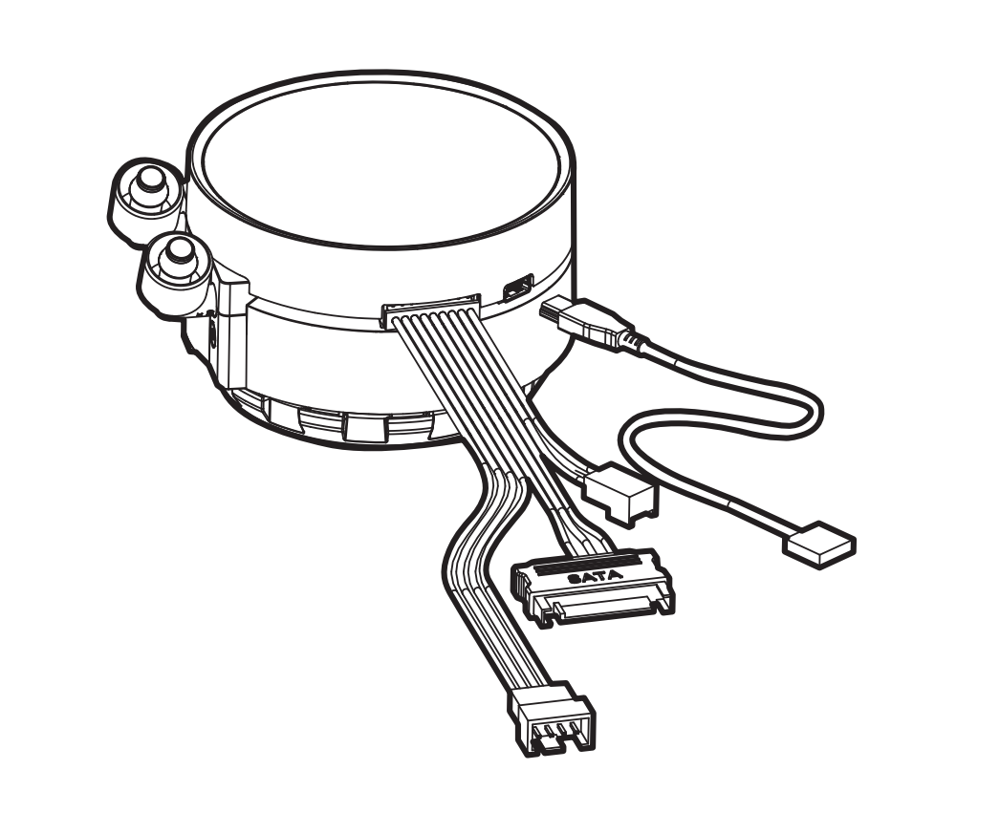

Initial Setup
It started with a box of old PC parts:
- Z270 Gaming K4 Motherboard
- 2x8 GB DDR4 RAM @ 2133 MHz
- Intel i5-6500 CPU @ 3.20 GHz
- NZXT Kraken x72 CPU cooler AIO
- EVGA SuperNOVA 750 G5 Power Supply
- Radeon R9 390 8GB Graphics Card
That last item, the 390 with half as much RAM as the base machine, began to call out to me. Of course it could never compete with the scale of modern cloud alternatives, but maybe it wouldn't have to?
Local LLM agents aren't new, but I had always balked at the idea of giving executive control to a bot on my primary desktop. But what if it wasn't my primary desktop? What if it was a box of parts cobbled together into something that POSTs?
Maybe, just maybe, I could set up this hardware to host a local model. Nothing too impressive, but potentially something niche and functional.
I couldn't sleep. New (to me) terms and phrases bounced around my head...
Harness. Quantization. Hugging Face.
What do they all mean? Just how deep does this AI iceberg go?
Plug and Play
Pulling out all the techniques I'd learned from Lego Star Wars, I held the B button until the PC components flew around and assembled themselves automatically.
CPU? Click.
RAM? Clack.
GPU? Clickety clack.
PSU? Cli... You get the idea.
Before long, I had a fully decked-out motherboard—but no case. In the spirit of good airflow (and not spending money), I strung up the motherboard using zip ties.

No case means no power button, but we can manually short the power-on pins using a screwdriver. I grabbed an old monitor and keyboard, said my prayers, and booted up the PC. To my astonishment, the system booted on the first try.
Digging back into my parts box, I pulled out a 230 GB HDD that I'd had since 2014. Special thanks to my brother for giving me his old laptop so I could temple-of-doom the HDD out of that thang. One SATA cable, one thumb drive, and one "I don't have a product key" later—we got Windows up and running.
Running... until it wasn't. I reseated and tested the RAM, replaced the CMOS battery, and removed the GPU. The PC would boot and run for a while before randomly shutting down.
At a loss, I began to mournfully look through my box of parts: standoff screws, old thermal paste, SATA cables, power cables. Nothing worth swapping out for A/B testing. Well, a little fresh thermal paste couldn't hurt.
As I squished a pea-sized bead of paste against the CPU, I marveled at the simplicity of the NZXT Kraken. This cooler is so clean, it barely has any cables. Obviously it has power connections direct to the radiator fans, but that's it! ...
Hmm… I wonder how the water gets pumped through the radiator without any power cables...
It was in that moment when I recalled a pair of cables that I had completely ignored during construction—a pair of cables that suspiciously aligned with a pair of ports I could see on the side of the Kraken.

Kraken installation manualAfter installing the missing cords, a crazy thing happened: the PC ran consistently without shutting down. With this newfound system stability, the hardware phase was done and we could move on to configuring software.